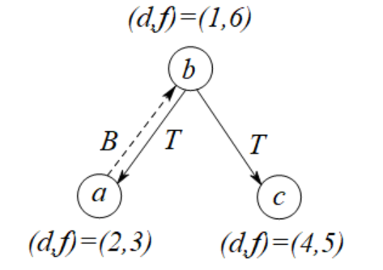
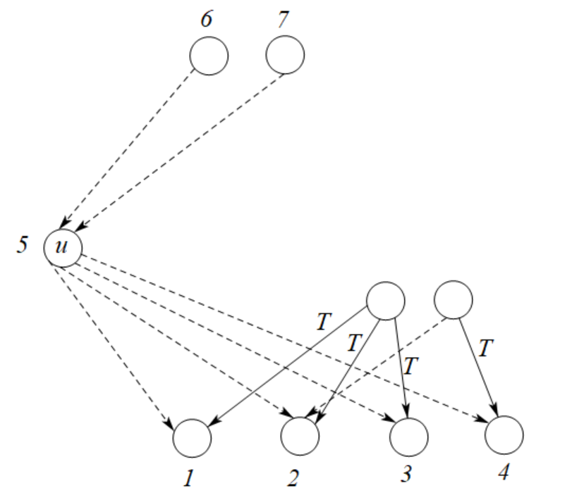

算法导论20.3 Exercises 答案
20.3-1
如下是有向图的情形。
\(\begin{array}{|l|l|l|l|}\hline \texttt{FROM}\backslash \texttt{TO}&W&G&B\\ \hline W&\texttt{TBFC}&\texttt{BC}&\texttt{C}\\ \hline G&\texttt{TF}&\texttt{TFB}&\texttt{TFC}\\ \hline B&&\texttt{B}&\texttt{TBFC}\\ \hline \end{array}\)
其中，\(\texttt{T}\)表示树边，\(\texttt{B}\)表示后向边，\(\texttt{F}\)表示前向边，\(\texttt{C}\)表示横跨边。
如下是无向图的情形，去除了横跨边和前向边的情况。
\(\begin{array}{|l|l|l|l|}\hline \texttt{FROM}\backslash \texttt{TO}&W&G&B\\ \hline W&\texttt{TB}&\texttt{TB}&\\ \hline G&\texttt{TB}&\texttt{TB}&\texttt{TB}\\ \hline B&&\texttt{TB}&\texttt{TB}\\ \hline \end{array}\)
20.3-2
\(G\)中的每个节点\(v\)的发现时间\(v.d\)和完成时间\(v.f\)如下表所示：
\(\begin{array}{|l|l|l|}\hline v&v.d&v.f\\ \hline q&1&16\\ \hline r&17&20\\ \hline s&2&7\\ \hline t&8&15\\ \hline u&18&19\\ \hline v&3&6\\ \hline w&4&5\\ \hline x&9&12\\ \hline y&13&14\\ \hline z&10&11\\ \hline \end{array}\)
\(G\)中的每条边分类如下：
- 树边: \((q, s),(s, v),(v, w),(q, t),(t, x),(x, z),(t, y),(r, u)\)
- 后向边: \((w, s),(y, q),(z, x)\)
- 前向边: \((q, w)\)
- 横向边: \((u, y),(r, y)\)
20.3-3
\((u(v(y(xx)y)v)u)(w(zz)w)\)
20.3-4
点的颜色仅仅用于判断点的状态，只要当前节点已经被深度优先算法访问过了，那么当前点的颜色就没有用处了。因此黑色和灰色状态可以合并，与白色状态一起，我们就可以只使用\(1\)比特来表示点的状态。因此最终的做法是，将算法DFS-VISIT的第3行修改成u.color=BLACK，并将第8行删去。
20.3-5
a
充分性：无论是树边还是前向边，\(v\)都是\(u\)在DF树上的子节点。根据定理20.7的第三部分，有\(u.d<v.d<v.f<u.f\)。
必要性：根据推论20.8，可以知道满足\(u.d<v.d<v.f<u.f\)时，必须满足\(v\)是\(u\)的后代。此时边\((u,v)\)要么是树边，要么是前向边。
b
充分性：由于\((u,v)\)是后向边，因此\(u\)是\(v\)的后代。因此，如果\(u=v\)，那么\(v.d=u.d<u.f=v.f\)，原结论成立。如果\(u\neq c\)，那么根据定理20.7的第二部分，有\(v.d<u.d<u.f<v.f\)。因此原结论成立。
必要性：当\(u=v\)时，有\(v.d=u.d<u.f=v.f\)。因此\((u,v)\)是自环，而自环将会被归类到有向边中。当\(u\neq v\)时，有\(v.d<u.d<u.f<v.f\)，此时根据定理20.7的第2部分，可以知道\(v\)是\(u\)的祖先。因此边\((u,v)\)是后向边。
c
充分性：由于\((u,v)\)是横向边，因此\(u\)和\(v\)并不互为祖孙关系，因此根据定理20.7的第一条，将会有\(u.d < u.f < v.d < v.f\)和\(v.d < v.f < u.d < u.f\)这两种情况之一，我们将通过反证法证明前者是错误的。假设\(u.d< v.d\)成立，那么根据定理20.9，在时刻\(u.d\)，将会有一条从\(u\)到\(v\)的白色路径，那么此时\(v\)必定是\(u\)的后代，与横向边的定义不符合。因此必定有\(v.d < v.f < u.d < u.f\)。
必要性：由于\(v.d < v.f < u.d < u.f\)，根据定理20.7的第一部分，\(u,v\)并不就有祖孙关系，因此\((u,v)\)是横向边。
20.3-6
为了保证递归时上下文能够保存，我们设计非递归算法时，同样需要设计一个方法GET-NEXT-WHITE-VERTEX(G, u)，它的功能是多次被调用时，返回邻接表G.Adj[u]的第一个白色节点（如果没有，那么返回NIL）。通过均摊分析，这个方法的平均时间复杂度可以达到\(O(1)\)，此处我们不讨论GET-NEXT-WHITE-VERTEX的实现细节。
其余细节则和递归时的情形相近。
1 | DFS'(G) |
20.3-7
令\(V=\{a,b,c\},E=\{(a,b),(b,a),(b,c)\},G=(V,E)\)，那么从\(b\)到\(c\)就会有路径\(b\rightarrow a\rightarrow c\)。但是如果按照从\(b\rightarrow a\rightarrow b \rightarrow c\)的顺序访问各个节点，那么就会有\(b.d=1,a.d=2,c.d=4\)，并且树边集合为\(E_{\pi}=\{(b,a),(b,c)\}\)，此时\(c\)不是\(a\)的后代。\(G\)如下图所示。

20.3-8
本例子重用题目20.3-7所提出来的图。如果按照从\(b\rightarrow a\rightarrow b \rightarrow c\)的顺序访问各个节点，由于从\(b\)到\(c\)就会有路径\(b\rightarrow a\rightarrow c\)，并且按照从\(b\rightarrow a\rightarrow b \rightarrow c\)的顺序访问各个节点，那么有\(c.d=4,a.f=3\)，这是不满足条件\(c.d\le a.f\)的。
20.3-9
综合\(4\)种有向边的定义，可以设计出算法DFS''来打印有向图\(G\)中的每条有向边的种类。
1 | DFS''(G) |
如果\(G\)是一个无向图，那么直接删去判断前向边和横向边的判断即可，代码如下：
1 | DFS-U(G) |
20.3-10
如果一个节点\(u\)在一棵DF森林中是一个孤立节点，那么只需要做到以下要求即可：
- \(u\)的所有后继节点都先被访问。
- 接下来\(u\)被访问，那么\(u\)的所有出边都不是树边。
- 接下来\(u\)的前驱节点被访问，由于\(u\)已经被访问过，因此所有\(u\)的入边都不可能是树边。
从而，\(u\)在这棵DF森林就是一个孤立节点，示意图如下所示。

其中，和\(u\)关联的所有节点旁边的数字表示它们被访问的其中一个相对时间戳。
20.3-11
无向图中的边仅仅有树边和后向边这两种，那么对树边，进行真实的遍历，并记录下来；而对于后向边，只需要往返跳跃一次即可，同样记下这个跳跃记录，算法由DFS-U'给出。
1 | DFS-U'(G) |
20.3-12
和原版dfs的方案类似，多维护一个全局变量component，用来表示当前遍历图\(G\)时的连通分量编号。这个值在遍历每一个连通分量之前就已经维护好，遍历过程中只需要赋值即可。算法由DFS-U''给出。
1 | DFS-U''(G) |
\(\star\) 20.3-13
以下是一个比较暴力的做法，其期望时间复杂度为\(O(VE)\)。
- 使用tarjan算法对图\(G\)进行缩点，得到\(G\)的所有边双连通分量，以及这些双连通分量之间的关系图\(G'\)。注意\(G'\)是一个有向无环图。这个步骤需要花费\(O(V+E)\)的时间。
- 枚举\(G\)中的所有双连通分量，判断这些双连通分量是否存在超过\(1\)个环。如果存在一个双连通分量超过\(1\)个环，那么\(G\)不是单连通图，算法结束。这个步骤需要花费\(O(V+E)\)的时间。
- 对\(G'\)中的每个入度为\(0\)的节点进向后进行搜索。在单次搜索中，如果存在一个节点\(v\)被访问了两次或以上，那么说明从\(u\)至\(v\)有两条路径，原图\(G\)不是单连通图。否则\(G\)是单连通图。这个步骤需要花费\(O(VE)\)的时间。
因此，总共需要\(O(VE)\)的时间判断\(G\)是否为单连通图。